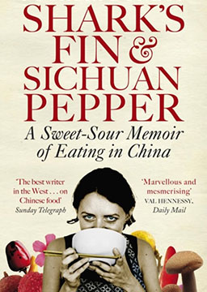
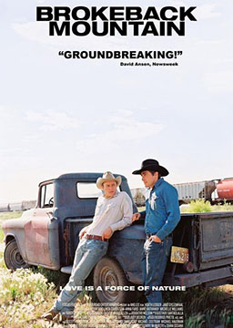
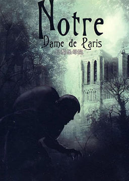

双语小说
收录中英文双语小说300多部，包括世界经典名著、社会小说、悬疑小说等短篇和长篇小说，可按照初中难度、高中难度和大学难度分类阅读，每部小说都有分段中英文对照，点击单词可查看中文翻译。

鱼翅与花椒 (Shark’s Fin and Sichuan Pepper)
作者：扶霞·邓洛普 (Fuchsia Dunlop) [英国]
这是关于中国菜的故事，也是一个英国女孩的中国历险记。扶霞一九九四年前往中国长住。打从一开始她就发誓不论人家请她吃什么，不管那食物有多么古怪，她一律来者不拒：第一次与四川料理相遇时的神魂颠倒、亲眼目睹鸡鸭被宰杀时的惊吓、体验千变万化的刀工、对养生饮食的叹服、品尝珍稀野味时内心的道德两难，透过扶霞的眼睛，我们得以用全新的角度来了解熟悉的中国菜。不同地方的食物拥有其独一无二的气质：川菜的辣带着一丝丝甜，就像悠闲的四川人，总是带着甜甜的体贴；湘菜直接又毫无妥协余地，就跟那里培养出来的领袖人物一样；扬州菜则是太平盛世的食物，温暖而抚慰人心。从四川热闹的市场到甘肃北部荒僻的风景，从福建的深山到迷人的扬州古城，书中呈现了中式料理让人难忘的美妙滋味，也深刻描绘出中西饮食文化差异，且兼具人文观察与幽默趣味。
教父3: 最后的教父 (The Godfather 3: The Last Don)
作者：马里奥·普佐 (Mario Puzo) [美国]
多梅尼克·克莱里库齐奥老谋深算、为达目的不择手段，下定决心要让他的后代在合法世界立足。他在给外孙丹特和甥外孙克罗斯洗礼的日子里向属下宣布，再过20年至30年他的家族将融入合法的世界，无忧无虑地享受自己的财富。当然，他希望有朝一日成为圣徒，而不是殉难者，因此仍保留着杀手组织。20年过去了，多梅尼克的几个儿子按他的旨意先后在金融、建筑、餐饮业站稳了脚跟，但是家族扭曲、血腥的过往引发了两个血亲之间的仇杀。这对唐的计划来说是个巨大的威胁，但是谁也无法阻挡教父最后的阴谋，谁都阻止不了家族终极的野心。克莱里库齐奥家族在与自己的亲家圣迪奥家族的争斗中大开杀戒，取得了胜利。教父为了使自己经营的赌博业合法，不惜重金贿赂政客绅士、警察侦探，并用暗杀手段，排除异己，扩充了实力。然而，他的外孙丹特却具有圣迪奥家族的反骨，杀死了表舅——克莱里库齐奥家族的铁榔头皮皮。皮皮的儿子克罗斯为父报仇，与丹特作了殊死搏斗。
教父2: 西西里人 (The Godfather 2: The Sicilian)
作者：马里奥·普佐 (Mario Puzo) [美国]
不是《教父》的续集，是《教父》的升级。这里是西西里，比美国更露骨、更暴虐、更背信弃义。1950年，迈克尔·柯里昂即将结束在西西里的流亡。教父命令他把一个叫萨尔瓦多·吉里安诺的土匪带到美国。但是吉里安诺背负着沉重的血债深仇。吉里安诺是西西里的罗宾汉，他反抗腐败的政府、藐视黑手党的事业。在迷雾笼罩的群山峻岭和古老的遗迹之中，迈克尔·柯里昂的命运与最危险战士、情人和西西里人——吉里安诺息息相关。教父 (The Godfather)
作者：马里奥·普佐 (Mario Puzo) [美国]
该书自出版以来，一直畅销不衰，仅仅十年《教父》发行总数就高达1300万册。小说深度地揭露了黑手党的内幕，有助于了解和认识当代美国的社会状况。此外小说情节惊险，描写生动，引人入胜。美国派拉蒙影片公司与《教父》的作者合作，将小说改编成电影，1972年公映。次年3月，该片获得第45届奥斯卡金像奖中的最佳影片奖。内容简介：麦可是柯里昂家族人，是一名“乖乖的大学生”，他的父亲是黑道人物，但因不肯跟其他帮派合作贩卖毒品，险遭暗杀。在谈判时他杀掉了五个帮派的代表和一名警察局长，为了避风头躲到意大利。麦可的大哥被杀。回国后的麦可成为了黑手党新的领袖。
八十天环游地球 (Around the world in eighty days)
作者：儒勒·加布里埃尔·凡尔纳 (Jules Gabriel Verne) [法国]
这部小说的主题非常丰富，科幻主题、漫游主题、侦探主题、爱情主题等主题相互交叉、融合，构筑起了相当丰富的意义空间，在它的这些主题中间，东方主题是比较引人注目的。小说中福格主仆环游地球的线路是：绕道非洲到达印度，从印度到日本，再通过日本到达旧金山，最后从旧金山返回英国，写到的国家有印度、中国、菲律宾、日本等，篇幅上占将近三分之一，这一部分的东方想象和书写也是《八十天环游地球》中戏剧性元素最突出的部分，充满了刺激和冒险、戏谑和讽刺。内容简介：英国绅士福克与朋友打赌两万英镑,要在80天内环游地球一周回到伦敦。但他不幸被误当作偷窃英格兰银行的大盗，被苏格兰场通缉、追捕。随后他和仆人路路通克服了路途中的重重艰难险阻,在环绕地球一圈并回到伦敦时,却迟到第一时间五分钟,他自认失败,却又意外地获得胜利——原来他自西向东绕地球一周,利用时差正好节约了一天的时间!一路上福克的机智、勇敢和毅力都表现了十足的绅士派头，最后抱得美人归——他在印度救出了一个殉葬的王公妻子（艾娥达夫人）。爱伦·坡短篇小说集 (Poe's Tales)
作者：埃德加·爱伦·坡 (Edgar Allan Poe) [美国]
爱伦·坡短篇小说代表作，并分为惊悚小说、心理小说、推理小说和幻想小说四大类，清晰展现了爱伦·坡在各个领域的杰出成就，爱伦·坡是文学史上罕见的全才，在许多文学领域都成果斐然。他是恐怖小说大师，也是推理小说的开山鼻祖和科幻小说的先驱。在人类共同的精神世界，爱伦·坡的想象力和冒险精神无可替代，他一个人开创了推理、科幻和惊悚小说。侦探悬疑小说的至高奖项“爱伦·坡奖”以他的名字命名。
断背山 (Brokeback Mountain)
作者：安妮·普鲁 (Annie Proulx) [美国]
获得1998年欧‧亨利短篇小说奖，刊登在《纽约客》后，获得全美杂志奖。改编的同名电影，由李安导演，获2005年意大利影展金狮奖最佳影片。内容简介：1963年的灿烂夏日，怀俄明西部，年轻的牛仔杰克·特维斯特与恩尼斯·德尔玛因同为牧场主乔·阿桂尔打工而相识。杰克比较健谈，且骑术高超。恩尼斯自幼小父母双亡，性格内向寡语。人迹罕至的断臂山深处，高山牧场的放羊工作单调而艰苦，随时有遭遇野兽袭击的可能。供杰克与恩尼斯栖身的帐篷狭小得只能睡下一人，另一人不得不睡在露天篝火旁，起初二人各自放羊，少有交流。直到有一天，二人晚饭时喝多了酒，夜晚又分外寒冷，于是杰克与恩尼斯同帐共裘而眠。在酒精与荷尔蒙的作用下，他们之间发生了“不该发生的事”，空虚寂寥让两个19岁的青年彼此相爱了。一个人做饭，另一个放羊，篝火边长谈，帐篷内欢爱，同性间的爱情伴随着二人度过了人生中最美好的夏日时光。莫泊桑短篇小说精选 (Maupassant's short stories)
作者：居伊·德·莫泊桑 (Guy de Maupassant) [法国]
莫泊桑是法国文学史上短篇小说创作数量最大、成就最高的作家，其三百余篇短篇小说的巨大创作量在十九世纪文学中是绝无仅有的。他的短篇所描绘的生活面极为广泛，实际上构成了十九世纪下半期法国社会一幅全面的风俗画，更重要的是，他把现实主义短篇小说的艺术提高到了一个前所未有的水平，他在文学史上的重要地位主要就是由他短篇小说的成就所奠定的。
巴黎圣母院 (Notre-Dame de Paris)
作者：维克多·雨果 (Victor Hugo) [法国]
别名《钟楼怪人》，以离奇和对比手法写了一个发生在15世纪法国的故事。小说揭露了宗教的虚伪，宣告禁欲主义的破产，歌颂了下层劳动人民的善良、友爱、舍己为人，反映了雨果的人道主义思想。这部书遭禁是在沙皇尼古拉一世统治时期的俄国，因为雨果思想活跃，既有资产阶级自由主义倾向，又同情刚刚兴起的无产阶级的革命，因此保守顽固的沙皇下令在俄国禁止出版雨果的所有的作品。小说曾多次被改编成电影、电视剧及音乐剧。内容简介：在法国，被资产阶级革命政权推翻的波旁王朝，在国外封建势力的支持下，于1815年复辟。直到1830年，法国爆发了“七月革命”，结束了波旁复辟王朝的封建统治。在复辟王朝统治下，法国宫廷和教会狼狈为奸，欺压人民。当时的巴黎，宗教势力邪恶黑暗，封建等制度十分残酷，封建主义压抑下的人性扭曲堕落。社会各阶层，特别是下层人民，处于令人深切同情的境地。饱受压迫的人民群众奋起反抗，与两股势力展开英勇的斗争，最终取得胜利。雨果感受到了封建统治的黑暗与残忍，创作出《巴黎圣母院》，借15世纪的巴黎社会反映现实生活。
一九八四 (Nineteen Eighty-Four)
作者：乔治·奥威尔 (George Orwell) [英国]
在这部作品中奥威尔刻画了一个令人感到窒息的恐怖世界，在假想的未来社会中，独裁者以追逐权力为最终目标，人性被强权彻底扼杀，自由被彻底剥夺，思想受到严酷钳制，人民的生活陷入了极度贫困，下层人民的人生变成了单调乏味的循环。这部小说已经被翻译成62种语言，全球销量超过3000万册，是20世纪影响力最大的英语小说之一。2015年11月，该作被评为最具影响力的20本学术书之一。内容简介：1984年的世界被三个超级大国所瓜分，大洋国、欧亚国和东亚国，三个国家之间的战争不断，国家内部社会结构被彻底打破，均实行高度集权统治，以改变历史、改变语言（如“新话”—Newspeak）、打破家庭等极端手段钳制人们的思想和本能，以具有监视与监听功能的“电幕”（telescreen）控制人们的行为，以对领袖的个人崇拜和对国内外敌人的仇恨维持社会的运转。故事中主人公所在的国家大洋国只有一个政党——英格兰社会主义，按照新语，简称英社（IngSoc）。社会也根据与党的关系被分为核心党员、外围党员和无产者（群众）三个阶层。政府机构分为四个部门：和平部负责军备和战争，友爱部负责维持秩序、镇压和严刑拷打，真理部负责宣传、文教和篡改历史，富裕部负责生产和分配。按照新话，分别简称为和部、爱部、真部、富部。在大洋国“真理部”从事篡改历史工作的外围党员温斯顿因为在工作中逐渐对其所处的社会和领袖“老大哥”（Big Brother）产生怀疑，并与另一位外围党员裘利亚产生感情，因而成为思想犯，在经历了专门负责内部清洗的“友爱部”的思想改造之后最终成为了“思想纯洁者”。